Explore Quito
A Brief History
Quito stands high in the Andes on the site of a pre-Inca centre incorporated into the Inca empire and refounded by Sebastián de Benalcázar in 1534. Baroque churches, monasteries, and plazas in the historic centre are among the -preserved in the Americas and were inscribed by UNESCO in 1978. The city remains Ecuador's political capital while facing volcanic valleys to the east.
Attractions Map
Top Sights & Activities
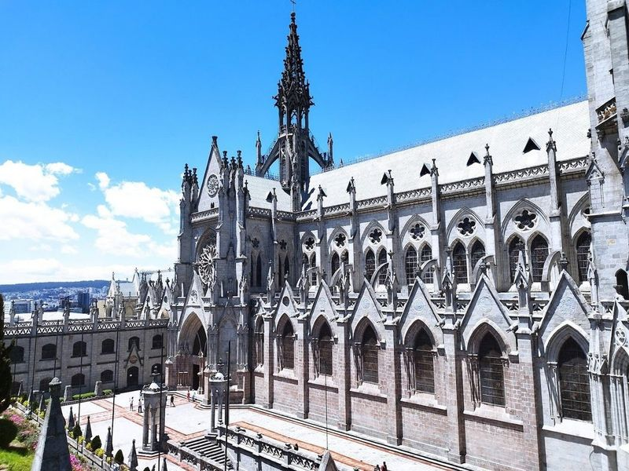
Basílica del Voto Nacional
The Basílica del Voto Nacional is a 19th-century church in Quito's historic center, known for its ornate neo-Gothic architecture. The church features intricate gargoyles and spires, offering visitors the chance to climb to the top for city views. It appeals to architecture enthusiasts, religious history buffs, and those seeking unparalleled panoramic vistas. Climbing the steep and narrow staircases to the towers is a must for an experience.
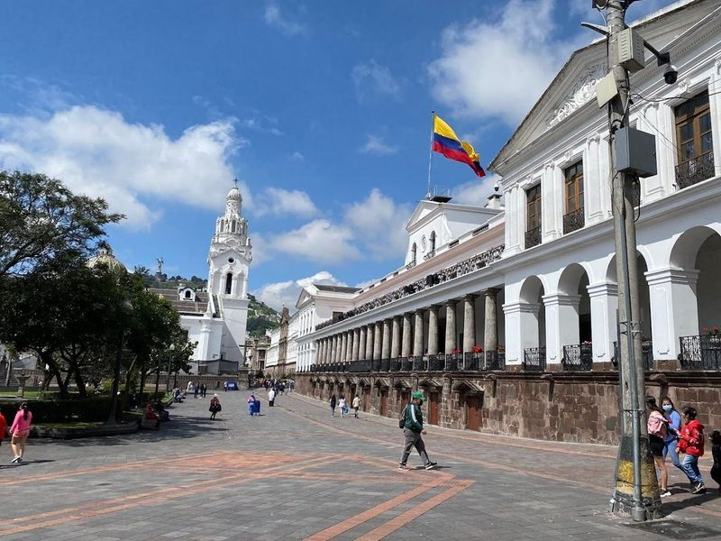
Independence Square
Independence Square, also known as Plaza de la Independencia or Plaza Grande, is a grand plaza and park situated in the heart of old Quito. It serves as the focal point of Quito's historic district and features a monument commemorating those who first advocated for independence from the Royal Audience of Quito in 1809. The square is surrounded by monumental government and church buildings such as the Cathedral, Government Palace, Archbishop's Palace, and City Hall.
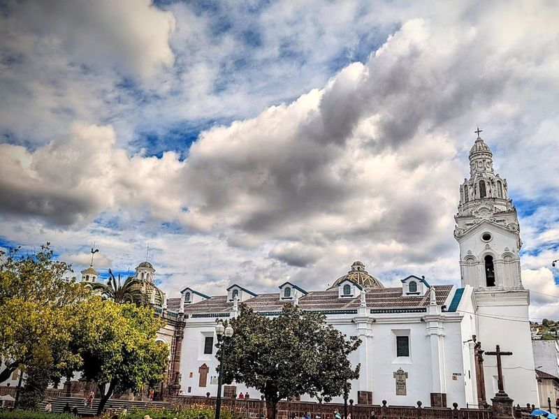
Quito Metropolitan Cathedral
The Catedral Metropolitana de Quito is a 16th-century domed church with neoclassical architecture and four colorful, dramatic chapels. It is one of the oldest churches in South America and a must-visit in the historic center of Quito. The site forms part of Quito Metropolitan Cathedral's documented civic and cultural landscape within Quito, with archives and visitor information available from municipal or regional heritage authorities.
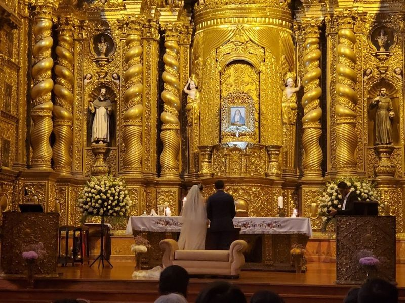
Church of the Society of Jesus
The Church of the Society of Jesus, also known as La Compania de Jesus, is a remarkable baroque church in Quito, Ecuador. Its construction began in 1605 and was completed in 1765. The interior is adorned with elaborate carvings and gilded with gold leaf, creating a sight that has earned it the reputation of being beautiful churches in Ecuador.
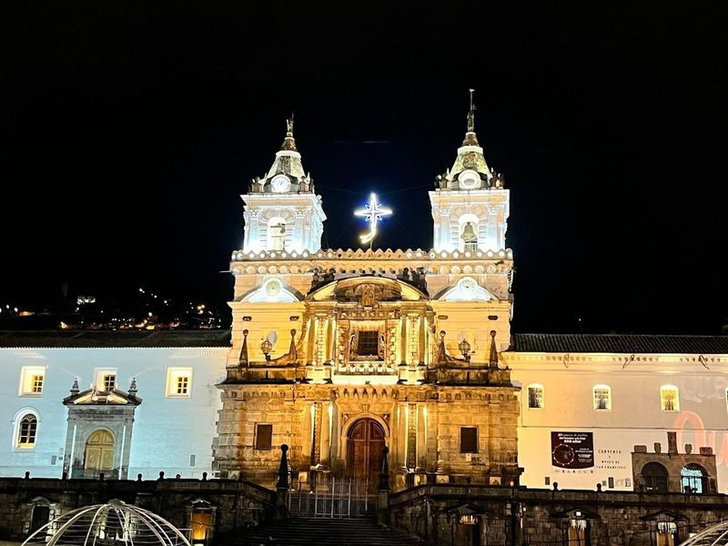
Basilica and Convent of San Francisco
The San Francisco Catholic Church in Quito is a grand baroque church known for its ornate interior featuring intricate paintings and sculptures. It is part of the historic center of Quito, which also includes other notable attractions such as the Compania de Jesus church, Basilica del Voto Nacional church, Catedral Primada de Quito, and Santo Domingo church. The area also boasts landmarks like La Plaza Grande and Carondelet Palace.
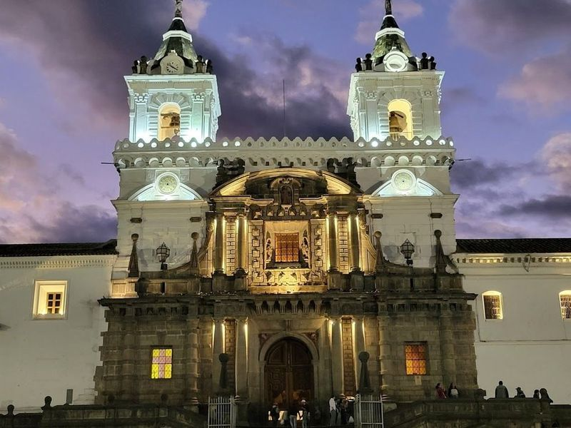
Historic Center of Quito
The Quito Historic Center is a captivating area that showcases the rich cultural and architectural heritage of Ecuador's capital. As a UNESCO World Heritage Site, it boasts over 100 well-preserved Spanish colonial and neoclassical buildings, making it examples of colonial districts in Latin America.
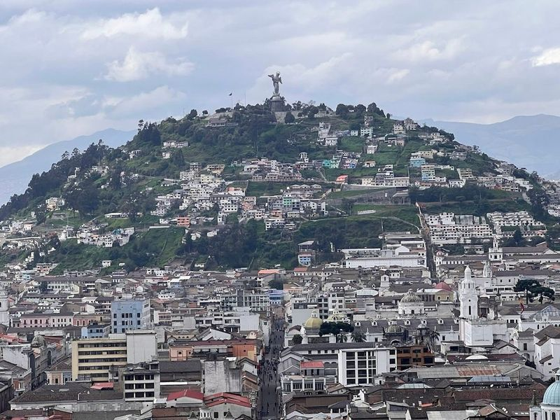
Virgin of the Panecillo
The Virgin of the Panecillo is a 30-meter-tall aluminum statue of the winged Virgin Mary, located on a hill overlooking Quito's Old Town. According to local legend, the statue faces north to bless that part of the city while her back is turned to the south, symbolizing wealth disparity. The road leading to the statue winds around El Panecillo hill, offering panoramic views of Quito.
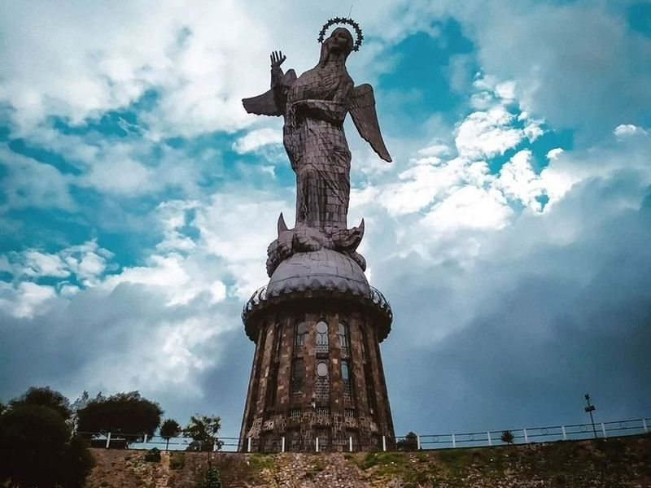
El Panecillo
El Panecillo is a rounded hill in Quito, Ecuador, featuring a 41m aluminum statue of the Virgin of Quito at its summit. It overlooks the city and offers panoramic views, making it a popular spot for photography enthusiasts and cultural explorers. Visitors can enjoy peaceful sunrise or golden hour experiences here. To reach El Panecillo, it's recommended to take a taxi or use guided tour services due to its popularity and potential crowding.
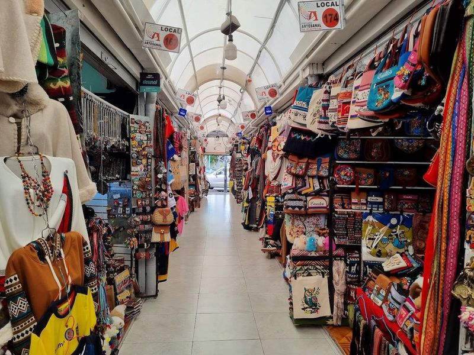
La Mariscal Artisan Market
La Mariscal Artisan Market, located in Quitos Mariscal district near Plaza Foch, is a vibrant and lively covered market offering a wide array of traditional Ecuadorian crafts. From alpaca blankets to handmade jewelry and colorful textiles, the market is a treasure trove for souvenir hunters. The nearby La Floresta Artisan Market also showcases unique local artworks and crafts reflecting the rich Ecuadorian culture.
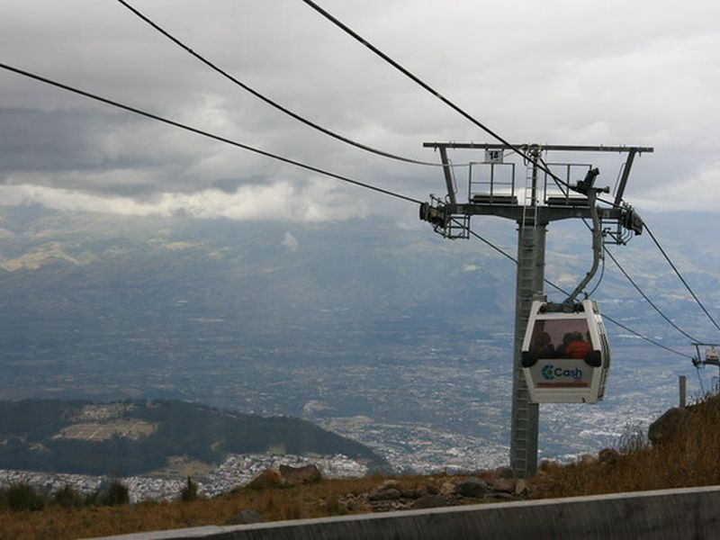
TelefériQo Cable Car
One of the highest aerial lifts in the world, offering views of Quito and the surrounding Andes mountains. A must-visit for scenery. The site forms part of TelefériQo Cable Car's documented civic and cultural landscape within Quito, with archives and visitor information available from municipal or regional heritage authorities.
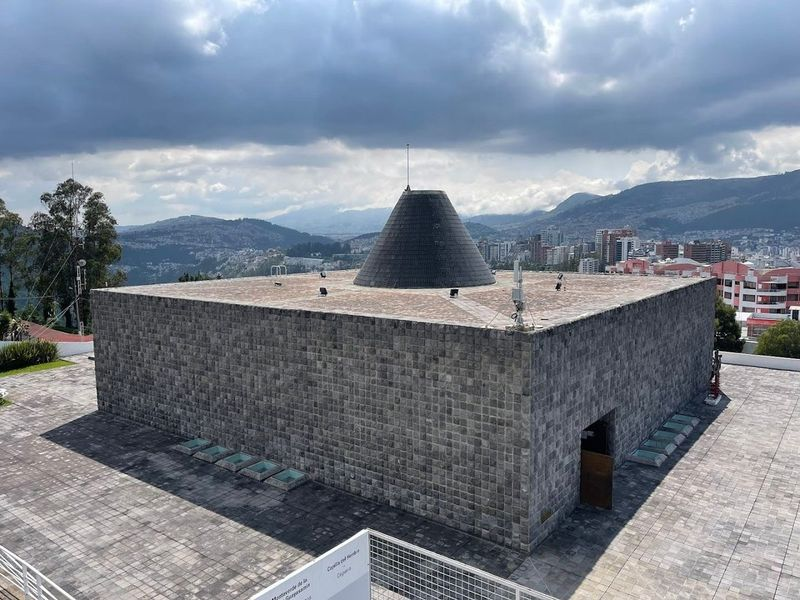
Capilla del Hombre
Capilla del Hombre is a museum in Quito, Ecuador, dedicated to the celebrated artist Oswaldo Guayasamín. The museum showcases his impressive paintings and sculptures, as well as collections of pre-Columbian and colonial artifacts. Visitors can explore five cultural spaces managed by the Guayasamin Foundation, including the Guayasamin House-Museum and the Maruja Monteverde Hall of Temporary Exhibitions.
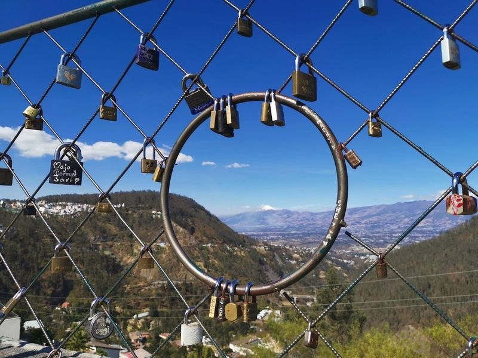
El Mirador De Guapulo
El Mirador De Guapulo is a hidden gem nestled in the picturesque neighborhood of Guapulo, offering views of the Cumbayá Valley and the surrounding Andes mountains. This serene viewpoint provides an escape from Quito's hustle and bustle, making it ideal for those seeking tranquility. The vistas are particularly enchanting during early mornings or late afternoons when the light enhances the landscape’s beauty, perfect for photography lovers.
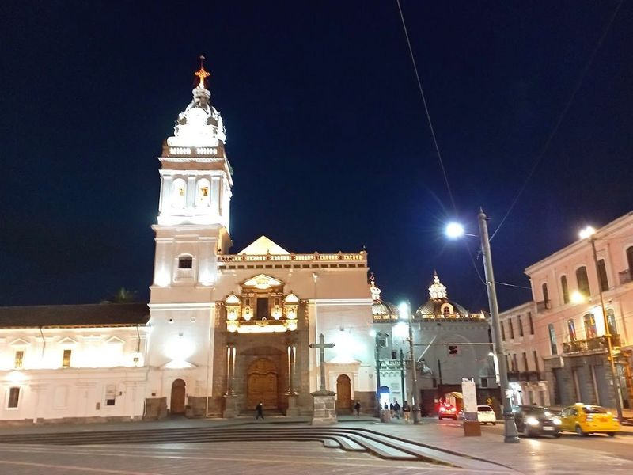
Iglesia de Santo Domingo
Iglesia de Santo Domingo, located in the historic center of Quito, is a significant place of worship with a rich history dating back to 1540. The church features a neo-Gothic altarpiece and houses an array of 16th and 17th-century paintings and sculptures. The interior is adorned with intricate cedar carvings covered in gold leaf, along with valuable religious artwork.
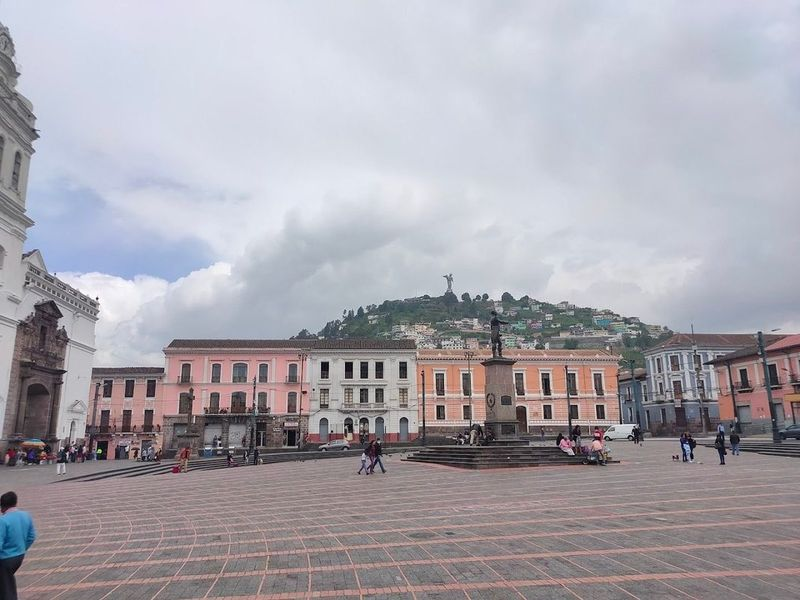
Plaza de Santo Domingo
Plaza Santo Domingo is a captivating gem nestled in the heart of Quito, Ecuador's colonial town, which is recognized as a UNESCO World Heritage Site. This historic square is home to the Santo Domingo Church, an architectural marvel that draws both locals and tourists alike. The plaza offers a serene atmosphere where visitors can relax on benches and engage in friendly conversations with neighbors.
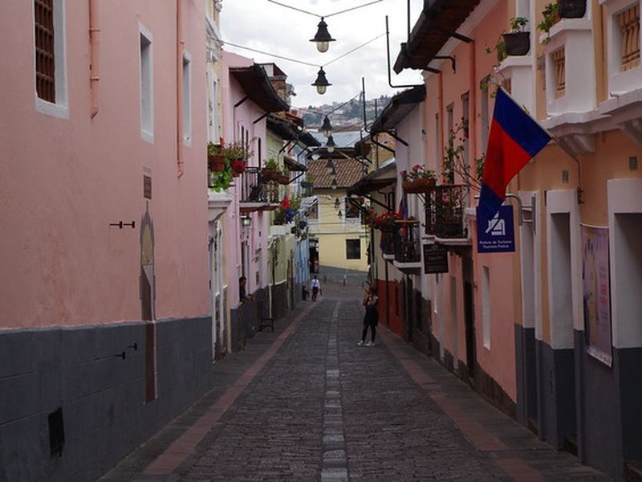
Calle La Ronda
A charming, cobblestoned street in the historic center, filled with artisan shops, cafes, and traditional Ecuadorian cuisine. Perfect for an evening stroll. The site forms part of Calle La Ronda's documented civic and cultural landscape within Quito, with archives and visitor information available from municipal or regional heritage authorities.
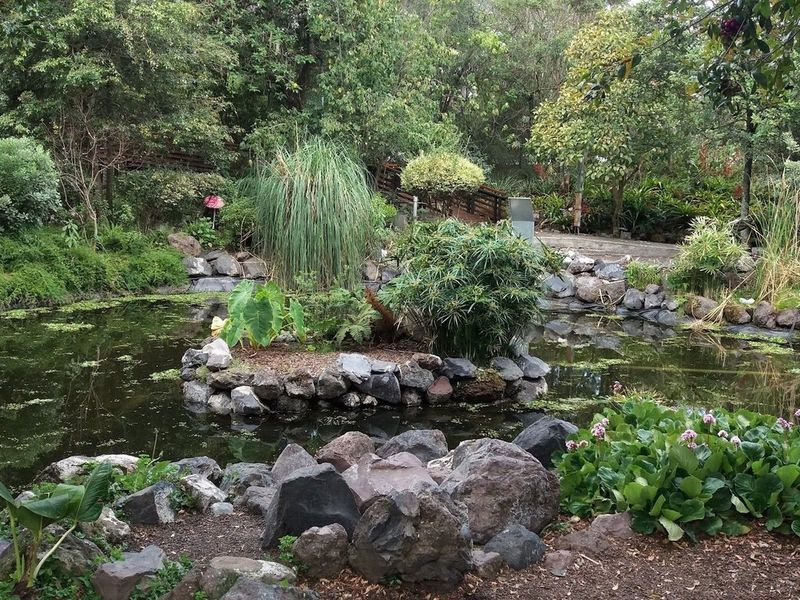
Quito Botanical Gardens
Quito Botanical Gardens, nestled within La Carolina Park, offers a delightful escape into nature. The garden showcases the diverse ecosystems of Ecuador, featuring replicas of coastal, Andean, and Amazon environments. Visitors can explore two impressive greenhouses housing exquisite orchids and intriguing carnivorous plants. Additionally, the garden boasts a bonsai collection and a serene boating lagoon with charming fountains.
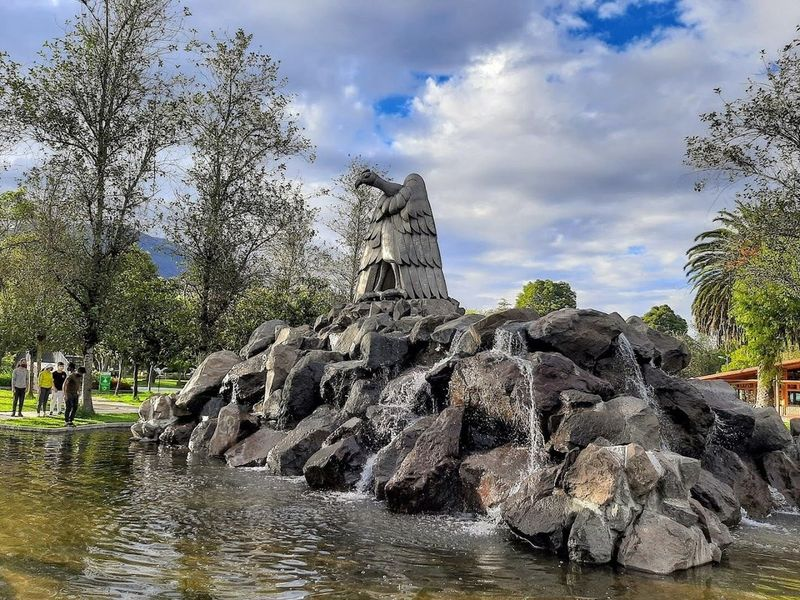
Parque La Carolina
Parque La Carolina is a vast 67-hectare park located in the northern part of the city, offering a wide range of activities and attractions. Visitors can enjoy biking, soccer, basketball, and even rent paddle boats to explore the park's pond. The park also features football fields, running tracks, playgrounds, and a large skatepark. Additionally, it houses the Quito Exhibition Center and Botanical Gardens.
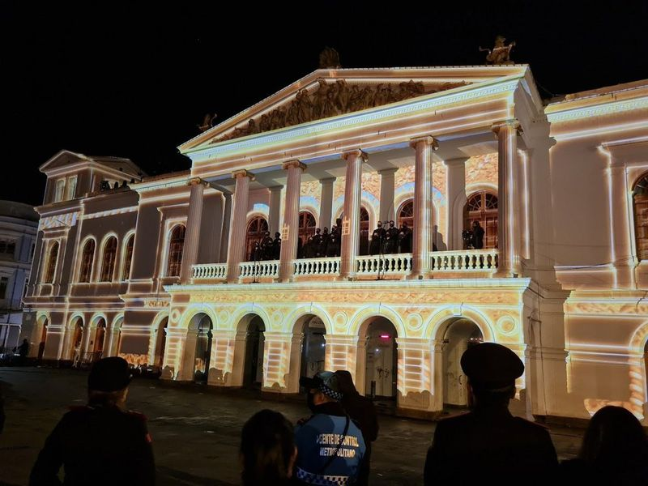
Teatro Sucre
Teatro Sucre, Quito's most prestigious theater, opened its doors in 1886 and stands as one of South America's oldest opera houses. Designed by the German architect Francisco Schmidt, this neoclassical gem mirrors the grandeur of European opera venues. It is not only celebrated for its architecture but also for hosting a variety of cultural events, including international jazz and classical music festivals.
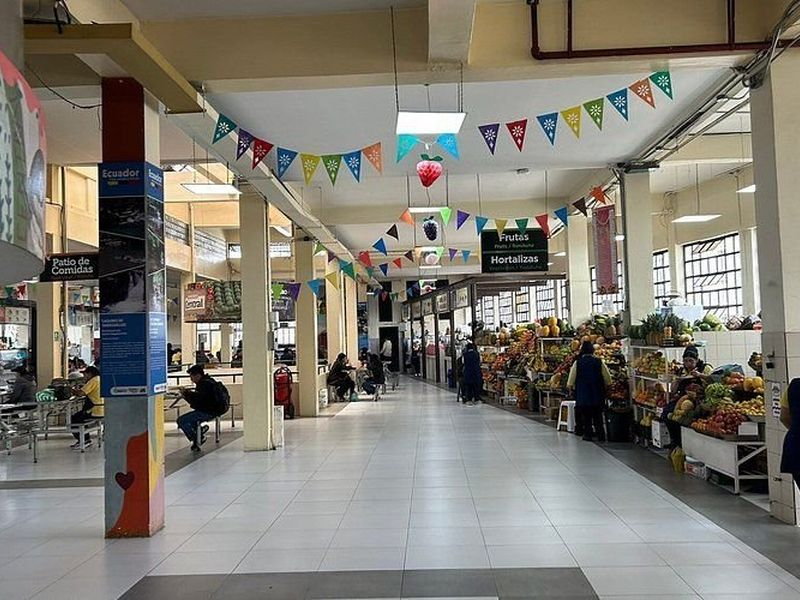
Mercado Central
Mercado Central in Quito, Ecuador is a historic and vibrant market dating back to 1950. It's located on Pichincha Avenue and is known for its gastronomy and the friendly vendors. The market offers a colorful array of tropical fruits like papayas, mangoes, and pineapples. Additionally, it features traditional healers called curanderas who perform rituals for good fortune.